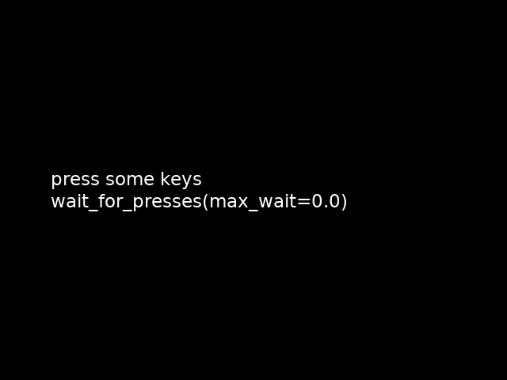

Note
Click here to download the full example code
Keypress demo¶
This example demonstrates the different keypress-gathering techniques available in the ExperimentController class.
Out:
exp_name: KeypressDemo
date: 2019-09-26 18_56_48.565541
file: /home/circleci/project/examples/experiments/keypress.py
participant: foo
session: 001
2019-09-26 18:56:48,565 - INFO - Expyfun: Using version 2.0.0.dev0 (requested dev)
2019-09-26 18:56:48,566 - INFO - Expyfun: Setting up sound card using pyglet backend with 2 playback channels
2019-09-26 18:56:48,788 - WARNING - Expyfun: Mismatch between reported stim sample rate (24414) and device sample rate (44100). Experiment Controller will resample for you, but this takes a non-trivial amount of processing time and may compromise your experimental timing and/or cause artifacts.
2019-09-26 18:56:48,788 - INFO - Expyfun: Setting up screen
2019-09-26 18:56:48,810 - EXP - Expyfun: Set screen visibility True
2019-09-26 18:56:48,840 - INFO - Expyfun: Initializing dummy triggering mode
2019-09-26 18:56:48,841 - INFO - Expyfun: Initialization complete
2019-09-26 18:56:48,841 - EXP - Expyfun: Participant: foo
2019-09-26 18:56:48,841 - EXP - Expyfun: Session: 001
2019-09-26 18:56:52,479 - INFO - Expyfun: Exiting
2019-09-26 18:56:52,481 - EXP - Expyfun: Audio stopped and reset.
# Author: Dan McCloy <drmccloy@uw.edu>
#
# License: BSD (3-clause)
from expyfun import ExperimentController, building_doc
import expyfun.analyze as ea
print(__doc__)
isi = 0.5
wait_dur = 3.0 if not building_doc else 0.
msg_dur = 3.0 if not building_doc else 0.
with ExperimentController('KeypressDemo', screen_num=0,
window_size=[640, 480], full_screen=False,
stim_db=0, noise_db=0, output_dir=None,
participant='foo', session='001',
version='dev') as ec:
ec.wait_secs(isi)
###############
# screen_prompt
pressed = ec.screen_prompt('press any key\n\nscreen_prompt('
'max_wait={})'.format(wait_dur),
max_wait=wait_dur, timestamp=True)
ec.write_data_line('screen_prompt', pressed)
if pressed[0] is None:
message = 'no keys pressed'
else:
message = '{} pressed after {} secs'.format(pressed[0],
round(pressed[1], 4))
ec.screen_prompt(message, msg_dur)
ec.wait_secs(isi)
##################
# wait_for_presses
ec.screen_text('press some keys\n\nwait_for_presses(max_wait={})'
''.format(wait_dur))
screenshot = ec.screenshot()
ec.flip()
pressed = ec.wait_for_presses(wait_dur)
ec.write_data_line('wait_for_presses', pressed)
if not len(pressed):
message = 'no keys pressed'
else:
message = ['{} pressed after {} secs\n'
''.format(key, round(time, 4)) for key, time in pressed]
message = ''.join(message)
ec.screen_prompt(message, msg_dur)
ec.wait_secs(isi)
############################################
# wait_for_presses, relative to master clock
ec.screen_text('press some keys\n\nwait_for_presses(max_wait={}, '
'relative_to=0.0)'.format(wait_dur))
ec.flip()
pressed = ec.wait_for_presses(wait_dur, relative_to=0.0)
ec.write_data_line('wait_for_presses relative_to 0.0', pressed)
if not len(pressed):
message = 'no keys pressed'
else:
message = ['{} pressed at {} secs\n'
''.format(key, round(time, 4)) for key, time in pressed]
message = ''.join(message)
ec.screen_prompt(message, msg_dur)
ec.wait_secs(isi)
##########################################
# listen_presses / wait_secs / get_presses
ec.screen_text('press some keys\n\nlisten_presses()\nwait_secs({0})'
'\nget_presses()'.format(wait_dur))
ec.flip()
ec.listen_presses()
ec.wait_secs(wait_dur)
pressed = ec.get_presses() # relative_to=0.0
ec.write_data_line('listen / wait / get_presses', pressed)
if not len(pressed):
message = 'no keys pressed'
else:
message = ['{} pressed after {} secs\n'
''.format(key, round(time, 4)) for key, time in pressed]
message = ''.join(message)
ec.screen_prompt(message, msg_dur)
ec.wait_secs(isi)
####################################################################
# listen_presses / wait_secs / get_presses, relative to master clock
ec.screen_text('press a few keys\n\nlisten_presses()'
'\nwait_secs({0})\nget_presses(relative_to=0.0)'
''.format(wait_dur))
ec.flip()
ec.listen_presses()
ec.wait_secs(wait_dur)
pressed = ec.get_presses(relative_to=0.0)
ec.write_data_line('listen / wait / get_presses relative_to 0.0', pressed)
if not len(pressed):
message = 'no keys pressed'
else:
message = ['{} pressed at {} secs\n'
''.format(key, round(time, 4)) for key, time in pressed]
message = ''.join(message)
ec.screen_prompt(message, msg_dur)
ec.wait_secs(isi)
###########################################
# listen_presses / while loop / get_presses
disp_time = wait_dur
countdown = ec.current_time + disp_time
ec.call_on_next_flip(ec.listen_presses)
ec.screen_text('press some keys\n\nlisten_presses()'
'\nwhile loop {}\nget_presses()'.format(disp_time))
ec.flip()
while ec.current_time < countdown:
cur_time = round(countdown - ec.current_time, 1)
if cur_time != disp_time:
disp_time = cur_time
# redraw text with updated disp_time
ec.screen_text('press some keys\n\nlisten_presses() '
'\nwhile loop {}\nget_presses()'.format(disp_time))
ec.flip()
pressed = ec.get_presses()
ec.write_data_line('listen / while / get_presses', pressed)
if not len(pressed):
message = 'no keys pressed'
else:
message = ['{} pressed after {} secs\n'
''.format(key, round(time, 4)) for key, time in pressed]
message = ''.join(message)
ec.screen_prompt(message, msg_dur)
ec.wait_secs(isi)
#####################################################################
# listen_presses / while loop / get_presses, relative to master clock
disp_time = wait_dur
countdown = ec.current_time + disp_time
ec.call_on_next_flip(ec.listen_presses)
ec.screen_text('press some keys\n\nlisten_presses()\nwhile loop '
'{}\nget_presses(relative_to=0.0)'.format(disp_time))
ec.flip()
while ec.current_time < countdown:
cur_time = round(countdown - ec.current_time, 1)
if cur_time != disp_time:
disp_time = cur_time
# redraw text with updated disp_time
ec.screen_text('press some keys\n\nlisten_presses()\nwhile '
'loop {}\nget_presses(relative_to=0.0)'
''.format(disp_time))
ec.flip()
pressed = ec.get_presses(relative_to=0.0)
ec.write_data_line('listen / while / get_presses relative_to 0.0', pressed)
if not len(pressed):
message = 'no keys pressed'
else:
message = ['{} pressed at {} secs\n'
''.format(key, round(time, 4)) for key, time in pressed]
message = ''.join(message)
ec.screen_prompt(message, msg_dur)
ea.plot_screen(screenshot)
Total running time of the script: ( 0 minutes 3.977 seconds)